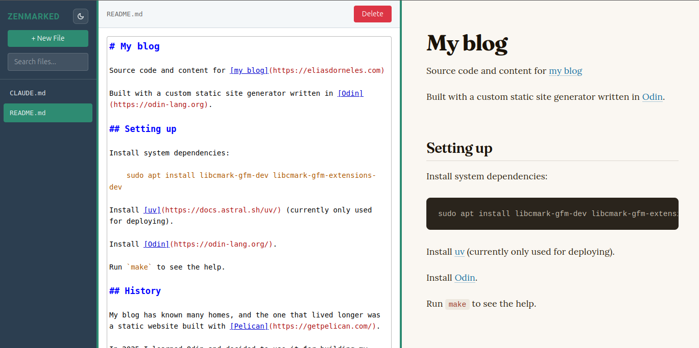

It's been a wild ride for lightweight markup languages the last few decades!
Let's go through some of the different markup languages I've used during the past 20 years or so. Some of these I learned by personal interest, some because I was forced to use, and each has its own feel.
Markup languages I've used or dabbled with
- BBCode: Like many people using the Internet in the 2000s, I was exposed to BBcode when participating on Internet forums. It is lightweight in amount of features, its syntax is not that light: it's pretty HTML-ish, but with square brackets, i.e.:
[b]bold[/b]instead of<b>bold</b>, etc. - txt2tags is probably the most obscure one from this list. It's not actively maintained anymore and it's been a long time since I last used it, but it had some interesting features and its markup is quite clean. I quite liked txt2tags, and when I was in college, for some time I had a blog with an ad-hoc blog engine I had written in a mix of bash and PHP, where the articles were written in txt2tags. Github didn't exist back then, so I don't have that code anymore.
- Fun fact: txt2tags was created by Aurélio Jargas, a prolific Brazilian programmer and writer well known in the Brazilian Linux user community from his books, projects and online writings.
- Textile was one of the ones I was forced to use and found it quite annoying! 😅 I had to use it for the Redmine project management tool (which also feels old now). I think it was annoying because its syntax looks deceptively simple, but I had to check the syntax docs almost every time.
- reST is one I didn't like using it in the beginning, until I used it more and understood better its design goals; then I started admiring it. It's designed specifically for technical documentation, so its syntax has a steeper learning curve, but it offers plenty of possibilities. The moment when it clicked for me was when I was working in the documentation for the Scrapy framework, I was able to reliably automate generating a list of all settings that were documented elsewhere in the documentation using Sphinx, linking to them properly (see here the PR if you're curious). And this will keep working for any future setting that will be added, because that's the power or reStructuredText: you can add structured semantic information that can be parsed and processed later, which is what the smart folks maintaining Scrapy did for its settings, making it possible to automate listing and linking to them.
- asciidoc is one I've messed around with by curiosity, but I can't remember ever using it for anything serious. That doesn't mean it's not a serious project though: it's pretty much serious and in fact, many technical books are written using that -- for instance, it's one of the three supported languages of the toolchain used for Oreilly books.
- Wikitext I used on the few occasions I contributed to Wikipedia, or used Mediawiki in other wikis. It's not that lightweight: even though the formatting basics are simple enough, Mediawiki's markup can be extended and I think that's allowed Wikipedia to have so many rich features.
- finally, Markdown, which is of course the winner of the lightweight markup languages race. By now, I figure a lot of people write in Markdown without even knowing that's what it is called. I am not sure if younger technical folks want to learn any other markup after learning Markdown, even if they will miss features like cross-referencing, footnotes, comments, and other goodies, anything different will feel "less standard". And now, it is of course the lingua franca of LLMs: ChatGPT, Claude and etc are all big readers and writers of Markdown.
Sometimes when I think about it, Markdown's popularity is kind of crazy: how did that happen? It wasn't the language with most features, and it wasn't the cleanest syntax, the original definition had ambiguities and earlier implementations diverged quite a bit, until there was the CommonMark standardization effort 10 years after Markdown had been created. I suppose the success was probably due in part because of the support in sites like GitHub/Gitlab/Bitbucket and StackOverflow, also the standardization effort and the reference C library CMark certainly helped.
Maybe the ambiguities of the early times were also somehow part of its success? Maybe it allowed just enough freedom so that different people could experiment with implementing their own version, until the shared understanding of some devoted ones converged into the CommonMark thing and its C library reference implementation? 🤔
Or maybe it doesn't have much to do with easeness of implementation and availability, and it's really an optimal learning curve for 80% of the needs?
In any case, today Markdown is unavoidable: it's available everywhere or almost, and it's super easy to learn. At least, until you want to use a table, in which case, I hope you are using an implementation which supports GFM, otherwise good luck!
zenmarked - yet another Markdown editor
There is a plethora of Markdown editor apps out there. Why did I make a new one?
Because most of them suck, in a way or another! 😝
Okay, I'm joking, that's not fair: there are many great tools out there, but none that I tried had what I was looking for.
What I wanted:
- local, offline first: something I can use on my laptop when I'm traveling
- this eliminates all the online Markdown editors like StackEdit
- fast: I don't want to wait 10 seconds while some bullshit Electron-based app boots up, just to edit a bloody Markdown file
- this eliminates most of the desktop Markdown apps
- live preview: in the terminal I can already edit the file in Neovim and preview it with bat, but nothing beats live preview in the browser to really see what readers will see
- image support: i want to be able to paste or drag-and-drop images
- this one eliminates for good all the terminal-based options
If the above features interest you, you might want to try zenmarked.
For years I had been editing Markdown files with my text editor and previewing them with grip -- grip works but it isn't perfect, it supports GFM by calling Github APIs, so it doesn't work offline. Since I built the editor for my blog which I talk about in the previous post, whenever I would edit a Markdown file at work I would be like: "hm, it would be nice to be able to edit this in the same way I do it for my blog posts".
So I decided to extract the Markdown editor from that code, release it as an open source project, so I can use it everywhere and now you can too.
So go check it out!
It runs as a local server that you access through the browser.
You can install it with pip install zenmarked, or if you use uv, you can do: uv tool install zenmarked (or skip installation entirely and just run uvx zenmarked everytime).
Once you've installed, you can run zenmarked [SOMEFILE.md] and it will open the file in your browser ready to edit in a 3-column layout with a sidebar to manage Markdown files in current directory and a live preview in the right, like this:

This website's README.md open with zenmarked
You can open multiple instances in parallel, it will use different TCP ports: it does this by binding to port 0 so the OS decides which port to allocate for it.
It's written in Python and Javascript, but the code is actually rather small, because it's standing on the shoulders of giants: marked and CodeMirror 5 and Flask, that is.
It's MIT licensed, feel free to create a issue if you have suggestions/ideas for improving it.
Don't send PRs without my consentment beforehand though, I won't be taking PRs at this stage, not without discussing beforehand -- I don't want to review your vibecoded stuff!
Happy writing/editing, cheers! 😃